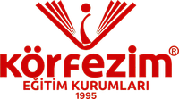
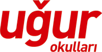

Kocaeli · Körfez
Sahaya çık.
Geleceğini yetiştir.
Çocuklar, gençler ve yetişkinler için profesyonel voleybol eğitimi. Yerel liglerden Türkiye finallerine uzanan güçlü bir altyapı.
0616+18
Her yaşta gelişim
Başlangıçtan lisanslı takıma
2025–26 SEZONU4×Kocaeli Şampiyonu
“Herkes öğretir,
Körfez Akademi yetiştirir.”
Körfez Akademi yetiştirir.”
01 / KULÜP
BİR SPOR OKULUNDAN FAZLASI
Teknikten önce
karakter inşa ederiz.
Körfez Voleybol Akademisi, resmî adıyla Körfez Akademi Spor Kulübü, Körfez’de çocuklara, gençlere ve yetişkinlere planlı ve profesyonel spor eğitimi sunan bağımsız, tescilli bir altyapı kulübüdür.
Koordinasyon, teknik, takım disiplini ve maç deneyimini aynı gelişim modelinde buluşturur; her sporcunun seviyesine ve hedefine uygun bir yol oluşturur.
noktası
yerel şampiyonluğu
son 16 başarısı
eğitim saatleri
02 / PROGRAMLAR
Her yaşa, her hedefe
doğru program.
Temel hareket eğitiminden resmî müsabaka seviyesine uzanan, yaşa ve gelişime göre yapılandırılmış gruplar.
Voleybol Okulu
Temel teknik, koordinasyon ve takım disiplinini eğlenceli bir eğitim modeliyle öğrenin.
6–16 yaşKız & Erkek
Cimnastik Okulu
Esneklik, denge ve temel fiziksel gelişim için güvenli başlangıç programı.
3–14 yaşTemel gelişim
Lisanslı Takımlar
TVF resmî liglerinde hedef odaklı teknik, taktik ve müsabaka hazırlığı.
Midi → BölgeselKız & Erkek
Yetişkin Voleybol
Teknik öğrenmek, voleybola dönmek veya aktif kalmak isteyenlere hobi grupları.
18+ yaşHer seviye
03 / BAŞARILAR
2025–2026 SEZONU
Kocaeli’den
Türkiye’ye.
Kulüp beyanına göre dört kategoride Kocaeli şampiyonluğu ve Türkiye finallerinde son 16. Her kupa; planlı antrenmanın, takım ruhunun ve istikrarlı gelişimin sonucu.
Takıma katıl →MİDİ ERKEKLERKocaeli Şampiyonu
’26YILDIZ ERKEKLERKocaeli Şampiyonu
’26KÜÇÜK ERKEKLERKocaeli Şampiyonu
’26MİDİ KIZLARKocaeli Şampiyonu
’2604 / TEKNİK KADRO
Bilgi, disiplin
ve deneyim.
Profesyonel gelişime önem veren, sporcu odaklı bir teknik ekip.
BAŞANTRENÖR
Soner Soylu
Altyapı yapılanması ve takım gelişimi
KIDEMLİ ANTRENÖR
Volkan Turan
TVF 3. Kademe antrenör
05 / 3 ANTRENMAN NOKTASI
Size en yakın
sahayı seçin.
Körfez’in seçkin eğitim kurumlarındaki kapalı spor salonlarında modern ve güvenli antrenman ortamı.
01

ANA ANTRENMAN NOKTASI
Kocaeli
Simya Koleji
Körfez · KocaeliYol tarifi ↗02

ANTRENMAN NOKTASI
Körfezim
Eğitim Kurumları
Körfez · KocaeliYol tarifi ↗03

ANTRENMAN NOKTASI
Uğur Okulları
Spor Salonu
Körfez · KocaeliYol tarifi ↗İLK ADIMI AT
Sahadaki yerini
şimdi ayır.
Yaş grubunuza uygun program, güncel aidat ve ücretsiz deneme antrenmanı için bize ulaşın.
ANA İLETİŞİM HATTI0530 145 05 32Şimdi ara →ALTERNATİF HAT0530 834 00 41
HAFTA SONUCumartesi & Pazar · 09:00–20:00
RESMÎ ADRESFatih, 4. Sokak No:70
41780 Körfez / Kocaeli
41780 Körfez / Kocaeli